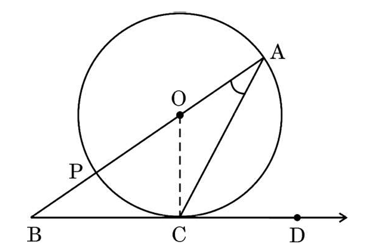
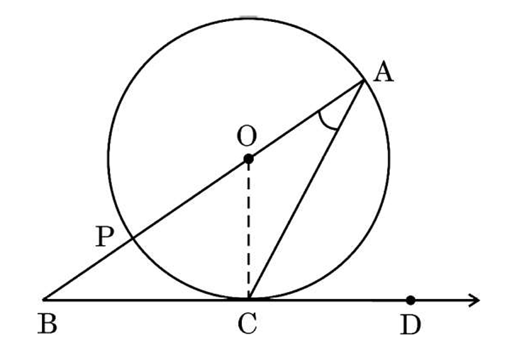

Vardaan Learning Institute
PYQ Solutions 2025
Set - 30-1 (Solutions)
MATHEMATICS (STANDARD)
Class - X
Time: 3 Hours
Max. Marks: 80
SECTION A
1.
Solution: (A) 7.8
Detailed Explanation:
We know the empirical relationship between Mode, Median, and Mean:
\[ \text{Mode} = 3(\text{Median}) - 2(\text{Mean}) \]
Given:
Median = 9.6
Mean = 10.5
Substituting these values into the formula:
\[ \text{Mode} = 3(9.6) - 2(10.5) \]
\[ \text{Mode} = 28.8 - 21.0 \]
\[ \text{Mode} = 7.8 \]
Detailed Explanation:
We know the empirical relationship between Mode, Median, and Mean:
\[ \text{Mode} = 3(\text{Median}) - 2(\text{Mean}) \]
Given:
Median = 9.6
Mean = 10.5
Substituting these values into the formula:
\[ \text{Mode} = 3(9.6) - 2(10.5) \]
\[ \text{Mode} = 28.8 - 21.0 \]
\[ \text{Mode} = 7.8 \]
2.
Solution: (B) 1
Detailed Explanation:
We have the expression: \( (\tan A \csc A)^2 - (\sin A \sec A)^2 \)
Recall trigonometric definitions:
\(\tan A = \frac{\sin A}{\cos A}\), \(\csc A = \frac{1}{\sin A}\), \(\sec A = \frac{1}{\cos A}\)
Substitute these into the expression:
Term 1: \( \tan A \csc A = \frac{\sin A}{\cos A} \cdot \frac{1}{\sin A} = \frac{1}{\cos A} = \sec A \)
Term 2: \( \sin A \sec A = \sin A \cdot \frac{1}{\cos A} = \frac{\sin A}{\cos A} = \tan A \)
Now the expression becomes:
\( (\sec A)^2 - (\tan A)^2 = \sec^2 A - \tan^2 A \)
Using the identity \( 1 + \tan^2 A = \sec^2 A \), we get \( \sec^2 A - \tan^2 A = 1 \).
Detailed Explanation:
We have the expression: \( (\tan A \csc A)^2 - (\sin A \sec A)^2 \)
Recall trigonometric definitions:
\(\tan A = \frac{\sin A}{\cos A}\), \(\csc A = \frac{1}{\sin A}\), \(\sec A = \frac{1}{\cos A}\)
Substitute these into the expression:
Term 1: \( \tan A \csc A = \frac{\sin A}{\cos A} \cdot \frac{1}{\sin A} = \frac{1}{\cos A} = \sec A \)
Term 2: \( \sin A \sec A = \sin A \cdot \frac{1}{\cos A} = \frac{\sin A}{\cos A} = \tan A \)
Now the expression becomes:
\( (\sec A)^2 - (\tan A)^2 = \sec^2 A - \tan^2 A \)
Using the identity \( 1 + \tan^2 A = \sec^2 A \), we get \( \sec^2 A - \tan^2 A = 1 \).
3.
Solution: (B) 300 m
Detailed Explanation:
Let the length of the string be \( L \).
The height of the kite from the ground is \( H = 150 \) m.
The angle of inclination is \( \theta = 30^\circ \).
In the right-angled triangle formed by the string, the height, and the horizontal ground:
\( \sin \theta = \frac{\text{Perpendicular}}{\text{Hypotenuse}} = \frac{H}{L} \)
\( \sin 30^\circ = \frac{150}{L} \)
Since \( \sin 30^\circ = \frac{1}{2} \), we have:
\( \frac{1}{2} = \frac{150}{L} \)
\( L = 150 \times 2 = 300 \) m.
Detailed Explanation:
Let the length of the string be \( L \).
The height of the kite from the ground is \( H = 150 \) m.
The angle of inclination is \( \theta = 30^\circ \).
In the right-angled triangle formed by the string, the height, and the horizontal ground:
\( \sin \theta = \frac{\text{Perpendicular}}{\text{Hypotenuse}} = \frac{H}{L} \)
\( \sin 30^\circ = \frac{150}{L} \)
Since \( \sin 30^\circ = \frac{1}{2} \), we have:
\( \frac{1}{2} = \frac{150}{L} \)
\( L = 150 \times 2 = 300 \) m.
4.
Solution: (D) similar but not congruent
Detailed Explanation:
In \(\Delta ABC\) and \(\Delta DEF\):
\( \angle B = \angle E \) (Given)
\( \angle C = \angle F \) (Given, as \(\angle F = \angle C\))
By the AA (Angle-Angle) Similarity criterion, \(\Delta ABC \sim \Delta DEF\).
However, we are given \( AB = 3 DE \). This means the ratio of corresponding sides is \( \frac{AB}{DE} = 3 \).
For triangles to be congruent, the ratio of corresponding sides must be 1 (i.e., AB must equal DE).
Since \( AB \neq DE \), the triangles are similar but not congruent.
Detailed Explanation:
In \(\Delta ABC\) and \(\Delta DEF\):
\( \angle B = \angle E \) (Given)
\( \angle C = \angle F \) (Given, as \(\angle F = \angle C\))
By the AA (Angle-Angle) Similarity criterion, \(\Delta ABC \sim \Delta DEF\).
However, we are given \( AB = 3 DE \). This means the ratio of corresponding sides is \( \frac{AB}{DE} = 3 \).
For triangles to be congruent, the ratio of corresponding sides must be 1 (i.e., AB must equal DE).
Since \( AB \neq DE \), the triangles are similar but not congruent.
5.
Solution: (C) 45°
Detailed Explanation:
Given: \( 7 + 4 \sin^2 \theta = 9 \)
Isolate \( \sin^2 \theta \):
\( 4 \sin^2 \theta = 9 - 7 \)
\( 4 \sin^2 \theta = 2 \)
\( \sin^2 \theta = \frac{2}{4} = \frac{1}{2} \)
Taking the square root (considering \(\theta\) is acute, \(\sin \theta > 0\)):
\( \sin \theta = \frac{1}{\sqrt{2}} \)
We know that \( \sin 45^\circ = \frac{1}{\sqrt{2}} \).
Therefore, \( \theta = 45^\circ \).
Detailed Explanation:
Given: \( 7 + 4 \sin^2 \theta = 9 \)
Isolate \( \sin^2 \theta \):
\( 4 \sin^2 \theta = 9 - 7 \)
\( 4 \sin^2 \theta = 2 \)
\( \sin^2 \theta = \frac{2}{4} = \frac{1}{2} \)
Taking the square root (considering \(\theta\) is acute, \(\sin \theta > 0\)):
\( \sin \theta = \frac{1}{\sqrt{2}} \)
We know that \( \sin 45^\circ = \frac{1}{\sqrt{2}} \).
Therefore, \( \theta = 45^\circ \).
6.
 Solution: (C) 2
Solution: (C) 2Detailed Explanation:
The zeroes of a polynomial correspond to the x-coordinates of the points where its graph intersects the x-axis.
Looking at the graph:
- The upward-opening parabola intersects the x-axis at two distinct points.
- The downward-opening parabola intersects the x-axis at the same two distinct points.
Since both polynomials share these intersection points, the total number of distinct real zeroes for the system shown is exactly 2.
7.
 Solution: (A) 25°
Solution: (A) 25°Detailed Explanation:
1. PA is a tangent to the circle at point A, and OA is the radius.
According to the property of tangents, the radius is perpendicular to the tangent at the point of contact.
Therefore, \( \angle OAP = 90^\circ \).
2. \( P, O, B \) lie on a straight line. Thus, \( \angle AOP \) and \( \angle AOB' \) (or the given \( \angle POB \)) are supplementary? No, looking at the diagram, P-O-B is a line segment. Actually, from the diagram logic for such problems, usually \(\angle AOP\) is part of the triangle.
Wait, the problem gives \( \angle POB = 115^\circ \). Let's assume P, O, B are collinear or B is a point on the circle such that angle is defined. Diagram shows B is on the line extending from P through O? Or P-O-B line? The diagram typically implies P-O-B is a line.
IF P-O-B is a straight line, then \( \angle AOP + \angle AOB = 180^\circ \). But here \(\angle POB = 115^\circ\) suggests the angle is the obtuse angle between the line segment PB and radius OB? No, usually \(\angle POB\) refers to the angle at center O.
Let's re-read the diagram carefully. PA is tangent. B acts like a point on the other side. If \(\angle POB = 115\) is given as the external angle to \(\Delta APO\)?
Let's assume standard "Exterior Angle Property". \( \angle POB \) is exterior to \( \Delta APO \)? No, that would mean P-O-B is a line. Then \( \angle AOP = 180 - 115 = 65^\circ \).
3. In \( \Delta APO \):
Sum of angles = \( 180^\circ \).
\( \angle APO + \angle OAP + \angle AOP = 180^\circ \)
\( \angle APO + 90^\circ + 65^\circ = 180^\circ \)
\( \angle APO + 155^\circ = 180^\circ \)
\( \angle APO = 180^\circ - 155^\circ = 25^\circ \).
8.
Solution: (B) 60°
Detailed Explanation:
We use the relationship: \( \text{Angle } (\theta \text{ in radians}) = \frac{\text{Arc Length } (l)}{\text{Radius } (r)} \)
Given:
Arc Length \( l = 20 \) cm
Radius \( r = \frac{60}{\pi} \) cm
Calculate \(\theta\):
\( \theta = \frac{20}{60/\pi} = 20 \times \frac{\pi}{60} = \frac{\pi}{3} \) radians.
Convert radians to degrees:
\( \text{Angle in degrees} = \frac{\pi}{3} \times \frac{180}{\pi} = \frac{180}{3} = 60^\circ \).
Detailed Explanation:
We use the relationship: \( \text{Angle } (\theta \text{ in radians}) = \frac{\text{Arc Length } (l)}{\text{Radius } (r)} \)
Given:
Arc Length \( l = 20 \) cm
Radius \( r = \frac{60}{\pi} \) cm
Calculate \(\theta\):
\( \theta = \frac{20}{60/\pi} = 20 \times \frac{\pi}{60} = \frac{\pi}{3} \) radians.
Convert radians to degrees:
\( \text{Angle in degrees} = \frac{\pi}{3} \times \frac{180}{\pi} = \frac{180}{3} = 60^\circ \).
9.
Solution: (C) 98
Detailed Explanation:
First, find prime factorizations of 98 and 28.
\( 98 = 2 \times 49 = 2 \times 7^2 \)
\( 28 = 2^2 \times 7 \)
Determine HCF (Lowest power of common factors):
\( m = \text{HCF}(98, 28) = 2^1 \times 7^1 = 14 \)
Determine LCM (Highest power of all factors):
\( n = \text{LCM}(98, 28) = 2^2 \times 7^2 = 4 \times 49 = 196 \)
Calculate \( n - 7m \):
\( n - 7m = 196 - 7(14) \)
\( = 196 - 98 = 98 \).
Detailed Explanation:
First, find prime factorizations of 98 and 28.
\( 98 = 2 \times 49 = 2 \times 7^2 \)
\( 28 = 2^2 \times 7 \)
Determine HCF (Lowest power of common factors):
\( m = \text{HCF}(98, 28) = 2^1 \times 7^1 = 14 \)
Determine LCM (Highest power of all factors):
\( n = \text{LCM}(98, 28) = 2^2 \times 7^2 = 4 \times 49 = 196 \)
Calculate \( n - 7m \):
\( n - 7m = 196 - 7(14) \)
\( = 196 - 98 = 98 \).
10.
Solution: (D) 1.557142
Detailed Explanation:
Approximate the values of the irrational numbers:
\( \sqrt{2} \approx 1.414 \)
\( \sqrt{3} \approx 1.732 \)
We need to find a rational number (terminating or repeating decimal) between 1.414 and 1.732.
Checking options:
(A) 1.4142387... (Non-terminating, non-repeating pattern implies irrational, and too close to lower bound)
(B) \( 2\sqrt{2} \approx 2(1.414) = 2.828 \) (Greater than 1.732)
(C) \( \pi \approx 3.14 \) (Greater than 1.732)
(D) 1.557142 (This is a terminating decimal, hence rational, and clearly \( 1.414 < 1.557 < 1.732 \)).
Detailed Explanation:
Approximate the values of the irrational numbers:
\( \sqrt{2} \approx 1.414 \)
\( \sqrt{3} \approx 1.732 \)
We need to find a rational number (terminating or repeating decimal) between 1.414 and 1.732.
Checking options:
(A) 1.4142387... (Non-terminating, non-repeating pattern implies irrational, and too close to lower bound)
(B) \( 2\sqrt{2} \approx 2(1.414) = 2.828 \) (Greater than 1.732)
(C) \( \pi \approx 3.14 \) (Greater than 1.732)
(D) 1.557142 (This is a terminating decimal, hence rational, and clearly \( 1.414 < 1.557 < 1.732 \)).
11.
Solution: (C) 5/7
Detailed Explanation:
The given polynomial is \( p(x) = 5x - 7x^2 + 3 \).
Rearranging in standard quadratic form \( ax^2 + bx + c \):
\( p(x) = -7x^2 + 5x + 3 \)
Here, \( a = -7 \), \( b = 5 \), \( c = 3 \).
The sum of zeroes (\(\alpha + \beta\)) is given by the formula \( -\frac{b}{a} \).
Sum = \( -\frac{5}{-7} = \frac{5}{7} \).
Detailed Explanation:
The given polynomial is \( p(x) = 5x - 7x^2 + 3 \).
Rearranging in standard quadratic form \( ax^2 + bx + c \):
\( p(x) = -7x^2 + 5x + 3 \)
Here, \( a = -7 \), \( b = 5 \), \( c = 3 \).
The sum of zeroes (\(\alpha + \beta\)) is given by the formula \( -\frac{b}{a} \).
Sum = \( -\frac{5}{-7} = \frac{5}{7} \).
12.
Solution: (B) 2a = b
Detailed Explanation:
Since \( x = 1 \) and \( y = 2 \) is a solution, these values must satisfy both equations.
Eq 1: \( 2x - 3y + a = 0 \)
Substitute: \( 2(1) - 3(2) + a = 0 \)
\( 2 - 6 + a = 0 \Rightarrow -4 + a = 0 \Rightarrow a = 4 \).
Eq 2: \( 2x + 3y - b = 0 \)
Substitute: \( 2(1) + 3(2) - b = 0 \)
\( 2 + 6 - b = 0 \Rightarrow 8 - b = 0 \Rightarrow b = 8 \).
Now compare \( a \) and \( b \):
\( b = 8 \) and \( a = 4 \).
Clearly, \( 2 \times 4 = 8 \), so \( 2a = b \).
Detailed Explanation:
Since \( x = 1 \) and \( y = 2 \) is a solution, these values must satisfy both equations.
Eq 1: \( 2x - 3y + a = 0 \)
Substitute: \( 2(1) - 3(2) + a = 0 \)
\( 2 - 6 + a = 0 \Rightarrow -4 + a = 0 \Rightarrow a = 4 \).
Eq 2: \( 2x + 3y - b = 0 \)
Substitute: \( 2(1) + 3(2) - b = 0 \)
\( 2 + 6 - b = 0 \Rightarrow 8 - b = 0 \Rightarrow b = 8 \).
Now compare \( a \) and \( b \):
\( b = 8 \) and \( a = 4 \).
Clearly, \( 2 \times 4 = 8 \), so \( 2a = b \).
13.
Solution: (D) \(10\sqrt{2}\) units
Detailed Explanation:
Area of a sector is given by \( A = \frac{\theta}{360} \times \pi r^2 \).
Given:
Area \( A = 40\pi \)
Angle \( \theta = 72^\circ \)
Substitute values:
\( 40\pi = \frac{72}{360} \times \pi r^2 \)
Cancel \(\pi\) from both sides:
\( 40 = \frac{1}{5} r^2 \quad (\text{since } \frac{72}{360} = \frac{1}{5}) \)
\( r^2 = 40 \times 5 = 200 \)
\( r = \sqrt{200} = \sqrt{100 \times 2} = 10\sqrt{2} \) units.
Detailed Explanation:
Area of a sector is given by \( A = \frac{\theta}{360} \times \pi r^2 \).
Given:
Area \( A = 40\pi \)
Angle \( \theta = 72^\circ \)
Substitute values:
\( 40\pi = \frac{72}{360} \times \pi r^2 \)
Cancel \(\pi\) from both sides:
\( 40 = \frac{1}{5} r^2 \quad (\text{since } \frac{72}{360} = \frac{1}{5}) \)
\( r^2 = 40 \times 5 = 200 \)
\( r = \sqrt{200} = \sqrt{100 \times 2} = 10\sqrt{2} \) units.
14.
Solution: (A) parallel
Detailed Explanation:
Consider a circle with center O and diameter AB. Let tangents be drawn at points A and B.
The radius (or diameter) is perpendicular to the tangent at the point of contact.
Let tangent at A be \( L_1 \) and tangent at B be \( L_2 \).
Then \( AB \perp L_1 \) (angle is 90°) and \( AB \perp L_2 \) (angle is 90°).
Since the sum of interior angles on the same side of the transversal AB is \( 90^\circ + 90^\circ = 180^\circ \), the lines \( L_1 \) and \( L_2 \) are parallel.
Detailed Explanation:
Consider a circle with center O and diameter AB. Let tangents be drawn at points A and B.
The radius (or diameter) is perpendicular to the tangent at the point of contact.
Let tangent at A be \( L_1 \) and tangent at B be \( L_2 \).
Then \( AB \perp L_1 \) (angle is 90°) and \( AB \perp L_2 \) (angle is 90°).
Since the sum of interior angles on the same side of the transversal AB is \( 90^\circ + 90^\circ = 180^\circ \), the lines \( L_1 \) and \( L_2 \) are parallel.
15.
Solution: (C) any odd number
Detailed Explanation:
We are given \( (-1)^n + (-1)^8 = 0 \).
We know that \( (-1)^8 = 1 \) (since 8 is an even power).
So, \( (-1)^n + 1 = 0 \)
\( (-1)^n = -1 \)
For \( (-1)^n \) to equal -1, \( n \) must be an odd number (e.g., -1, -3, 1, 3, 5...).
Detailed Explanation:
We are given \( (-1)^n + (-1)^8 = 0 \).
We know that \( (-1)^8 = 1 \) (since 8 is an even power).
So, \( (-1)^n + 1 = 0 \)
\( (-1)^n = -1 \)
For \( (-1)^n \) to equal -1, \( n \) must be an odd number (e.g., -1, -3, 1, 3, 5...).
16.
Solution: (D) \(\frac{5\sqrt{2}}{2}\) units
Detailed Explanation:
The length of the diameter is the distance between endpoints (2, 4) and (-3, -1).
Using Distance Formula:
\( d = \sqrt{(x_2 - x_1)^2 + (y_2 - y_1)^2} \)
\( d = \sqrt{(-3 - 2)^2 + (-1 - 4)^2} \)
\( d = \sqrt{(-5)^2 + (-5)^2} = \sqrt{25 + 25} = \sqrt{50} \)
\( d = 5\sqrt{2} \) units.
Radius \( r = \frac{Diameter}{2} = \frac{5\sqrt{2}}{2} \) units.
Detailed Explanation:
The length of the diameter is the distance between endpoints (2, 4) and (-3, -1).
Using Distance Formula:
\( d = \sqrt{(x_2 - x_1)^2 + (y_2 - y_1)^2} \)
\( d = \sqrt{(-3 - 2)^2 + (-1 - 4)^2} \)
\( d = \sqrt{(-5)^2 + (-5)^2} = \sqrt{25 + 25} = \sqrt{50} \)
\( d = 5\sqrt{2} \) units.
Radius \( r = \frac{Diameter}{2} = \frac{5\sqrt{2}}{2} \) units.
17.
Solution: (D) 3
Detailed Explanation:
Formula for nth term: \( a_n = a + (n-1)d \).
Given:
\( a_{11} = a + 10d = 39 \) (Eq 1)
\( a_{13} = a + 12d = 45 \) (Eq 2)
Subtract Eq 1 from Eq 2:
\( (a + 12d) - (a + 10d) = 45 - 39 \)
\( 2d = 6 \)
\( d = 3 \).
Detailed Explanation:
Formula for nth term: \( a_n = a + (n-1)d \).
Given:
\( a_{11} = a + 10d = 39 \) (Eq 1)
\( a_{13} = a + 12d = 45 \) (Eq 2)
Subtract Eq 1 from Eq 2:
\( (a + 12d) - (a + 10d) = 45 - 39 \)
\( 2d = 6 \)
\( d = 3 \).
18.
Solution: (C) 4/13
Detailed Explanation:
Total number of cards = 52.
We need probability of getting a Spade OR a King.
Let A = Event getting a Spade. Number of Spades = 13.
Let B = Event getting a King. Number of Kings = 4.
Intersection \( A \cap B \) = King of Spades = 1 card.
Using \( P(A \cup B) = P(A) + P(B) - P(A \cap B) \):
\( P(A \cup B) = \frac{13}{52} + \frac{4}{52} - \frac{1}{52} \)
\( = \frac{16}{52} \)
Simplify by dividing by 4:
\( \frac{16}{52} = \frac{4}{13} \).
Detailed Explanation:
Total number of cards = 52.
We need probability of getting a Spade OR a King.
Let A = Event getting a Spade. Number of Spades = 13.
Let B = Event getting a King. Number of Kings = 4.
Intersection \( A \cap B \) = King of Spades = 1 card.
Using \( P(A \cup B) = P(A) + P(B) - P(A \cap B) \):
\( P(A \cup B) = \frac{13}{52} + \frac{4}{52} - \frac{1}{52} \)
\( = \frac{16}{52} \)
Simplify by dividing by 4:
\( \frac{16}{52} = \frac{4}{13} \).
19.
Solution: (D) Assertion (A) is false, but Reason (R) is
true.
Detailed Explanation:
Assertion Check: The probability of selecting one number from 1 to 20 is given by \( \frac{\text{Favorable}}{\text{Total}} \). The favourable outcomes for "selecting a number" implies selecting any specific one which is 1/20, or if it means selecting "a number" (which is always true), the probability is 1. However, phrasing "selecting a number... is 1" implies certainty. Usually, such questions imply selecting a random number implies prob < 1 for specific events. BUT, if the event is "selecting a number between 1 to 20" , then yes, it's 1. Wait. Let's re-read carefully: "probability of selecting a number at random from the numbers 1 to 20 is 1" . This is phrased poorly. It likely means "Probability of selecting a SPECIFIC number is 1" , which is false (it is 1/20). OR "Probability that a selected number is from 1 to 20" , which is 1. Given standard exam patterns, "prob of selecting a number... is 1" is usually the error they want you to spot (it should be 1/20 for a single number). Let's assume assertion is False because probability of picking, say, '5', is 1/20, not 1.
Reason Check: For a sure event, probability is indeed 1. This is a standard definition. True.
Therefore, A is False, R is True.
Detailed Explanation:
Assertion Check: The probability of selecting one number from 1 to 20 is given by \( \frac{\text{Favorable}}{\text{Total}} \). The favourable outcomes for "selecting a number" implies selecting any specific one which is 1/20, or if it means selecting "a number" (which is always true), the probability is 1. However, phrasing "selecting a number... is 1" implies certainty. Usually, such questions imply selecting a random number implies prob < 1 for specific events. BUT, if the event is "selecting a number between 1 to 20" , then yes, it's 1. Wait. Let's re-read carefully: "probability of selecting a number at random from the numbers 1 to 20 is 1" . This is phrased poorly. It likely means "Probability of selecting a SPECIFIC number is 1" , which is false (it is 1/20). OR "Probability that a selected number is from 1 to 20" , which is 1. Given standard exam patterns, "prob of selecting a number... is 1" is usually the error they want you to spot (it should be 1/20 for a single number). Let's assume assertion is False because probability of picking, say, '5', is 1/20, not 1.
Reason Check: For a sure event, probability is indeed 1. This is a standard definition. True.
Therefore, A is False, R is True.
20.
Solution: (C) Assertion (A) is true, but Reason (R) is
false.
Detailed Explanation:
Assertion Check: If two hemispheres of the same radius are joined along their bases, the flat circular faces cover each other, leaving only the curved surfaces exposed. Two curved surfaces of hemispheres form a complete sphere. True.
Reason Check: The Total Surface Area (TSA) of a sphere is \( 4\pi r^2 \). The formula \( 3\pi r^2 \) corresponds to the TSA of a solid hemisphere (Curved \(2\pi r^2\) + Base \(\pi r^2\)). Therefore, the reason statement is False.
Detailed Explanation:
Assertion Check: If two hemispheres of the same radius are joined along their bases, the flat circular faces cover each other, leaving only the curved surfaces exposed. Two curved surfaces of hemispheres form a complete sphere. True.
Reason Check: The Total Surface Area (TSA) of a sphere is \( 4\pi r^2 \). The formula \( 3\pi r^2 \) corresponds to the TSA of a solid hemisphere (Curved \(2\pi r^2\) + Base \(\pi r^2\)). Therefore, the reason statement is False.
SECTION B
21.
(a) Solution:
Given \(\Delta ABC \sim \Delta PQR\).
Corresponding sides of similar triangles are proportional:
\( \frac{AB}{PQ} = \frac{BC}{QR} = \frac{AC}{PR} \)
Substituting known values:
\( \frac{6}{PQ} = \frac{4}{QR} = \frac{8}{6} \)
The ratio is \( \frac{8}{6} = \frac{4}{3} \).
Now find PQ:
\( \frac{6}{PQ} = \frac{4}{3} \Rightarrow 4PQ = 18 \Rightarrow PQ = 4.5 \) cm.
Find QR:
\( \frac{4}{QR} = \frac{4}{3} \Rightarrow 4QR = 12 \Rightarrow QR = 3 \) cm.
Calculate \( PQ + QR \):
\( 4.5 + 3 = 7.5 \) cm.
(b) Solution:

Given:
1. \( \frac{QR}{QS} = \frac{QT}{PR} \)
2. \( \angle 1 = \angle 2 \)
From (2), in \(\Delta PQR\), since \( \angle 1 = \angle 2 \) (Assume angles at base Q and R for triangle PQR? From diagram usually \(\angle 1 = \angle PQS\) and \(\angle 2 = \angle PRQ\)). This implies sides opposite are equal: \( PQ = PR \).
Substituting \( PR = PQ \) in (1):
\( \frac{QR}{QS} = \frac{QT}{PQ} \)
Inverting this:
\( \frac{QS}{QR} = \frac{PQ}{QT} \)
Now Consider \(\Delta PQS\) and \(\Delta TQR\):
Ratio of sides: \( \frac{PQ}{QT} = \frac{QS}{QR} \)
Included Angle: \( \angle Q \) is common to both triangles.
By SAS Similarity Criterion, \( \Delta PQS \sim \Delta TQR \).
Given \(\Delta ABC \sim \Delta PQR\).
Corresponding sides of similar triangles are proportional:
\( \frac{AB}{PQ} = \frac{BC}{QR} = \frac{AC}{PR} \)
Substituting known values:
\( \frac{6}{PQ} = \frac{4}{QR} = \frac{8}{6} \)
The ratio is \( \frac{8}{6} = \frac{4}{3} \).
Now find PQ:
\( \frac{6}{PQ} = \frac{4}{3} \Rightarrow 4PQ = 18 \Rightarrow PQ = 4.5 \) cm.
Find QR:
\( \frac{4}{QR} = \frac{4}{3} \Rightarrow 4QR = 12 \Rightarrow QR = 3 \) cm.
Calculate \( PQ + QR \):
\( 4.5 + 3 = 7.5 \) cm.
(b) Solution:
Given:
1. \( \frac{QR}{QS} = \frac{QT}{PR} \)
2. \( \angle 1 = \angle 2 \)
From (2), in \(\Delta PQR\), since \( \angle 1 = \angle 2 \) (Assume angles at base Q and R for triangle PQR? From diagram usually \(\angle 1 = \angle PQS\) and \(\angle 2 = \angle PRQ\)). This implies sides opposite are equal: \( PQ = PR \).
Substituting \( PR = PQ \) in (1):
\( \frac{QR}{QS} = \frac{QT}{PQ} \)
Inverting this:
\( \frac{QS}{QR} = \frac{PQ}{QT} \)
Now Consider \(\Delta PQS\) and \(\Delta TQR\):
Ratio of sides: \( \frac{PQ}{QT} = \frac{QS}{QR} \)
Included Angle: \( \angle Q \) is common to both triangles.
By SAS Similarity Criterion, \( \Delta PQS \sim \Delta TQR \).
22.
(a) Solution:
Expression: \( x \sin^2 60^\circ + y \cos 0^\circ + \sin 30^\circ - \cot 45^\circ = 5 \)
Values: \(\sin 60 = \frac{\sqrt{3}}{2}\), \(\cos 0 = 1\), \(\sin 30 = \frac{1}{2}\), \(\cot 45 = 1\).
Substitute:
\( x(\frac{\sqrt{3}}{2})^2 + y(1) + \frac{1}{2} - 1 = 5 \)
\( x(\frac{3}{4}) + y - \frac{1}{2} = 5 \)
\( \frac{3x}{4} + y = 5.5 = \frac{11}{2} \)
Multiply by 4:
\( 3x + 4y = 22 \).
To find \( x+2y \), we need specific integer solutions or more data. Assuming integer solutions from common Pythagorean triplets or simple values, if \(x=2\), \(6+4y=22 \Rightarrow 4y=16 \Rightarrow y=4\). Then \(x+2y = 2+8=10\). If \(x=6\), \(18+4y=22 \Rightarrow y=1\). Then \(x+2y=6+2=8\). Without further constraints, \(3x+4y=22\) is the locus.
(b) Solution:
Expression: \( \frac{\tan^2 60^\circ}{\sin^2 60^\circ + \cos^2 30^\circ} \)
Values: \(\tan 60 = \sqrt{3}\), \(\sin 60 = \frac{\sqrt{3}}{2}\), \(\cos 30 = \frac{\sqrt{3}}{2}\).
Numerator: \( (\sqrt{3})^2 = 3 \).
Denominator: \( (\frac{\sqrt{3}}{2})^2 + (\frac{\sqrt{3}}{2})^2 = \frac{3}{4} + \frac{3}{4} = \frac{6}{4} = \frac{3}{2} \).
Result: \( \frac{3}{3/2} = 3 \times \frac{2}{3} = 2 \).
Expression: \( x \sin^2 60^\circ + y \cos 0^\circ + \sin 30^\circ - \cot 45^\circ = 5 \)
Values: \(\sin 60 = \frac{\sqrt{3}}{2}\), \(\cos 0 = 1\), \(\sin 30 = \frac{1}{2}\), \(\cot 45 = 1\).
Substitute:
\( x(\frac{\sqrt{3}}{2})^2 + y(1) + \frac{1}{2} - 1 = 5 \)
\( x(\frac{3}{4}) + y - \frac{1}{2} = 5 \)
\( \frac{3x}{4} + y = 5.5 = \frac{11}{2} \)
Multiply by 4:
\( 3x + 4y = 22 \).
To find \( x+2y \), we need specific integer solutions or more data. Assuming integer solutions from common Pythagorean triplets or simple values, if \(x=2\), \(6+4y=22 \Rightarrow 4y=16 \Rightarrow y=4\). Then \(x+2y = 2+8=10\). If \(x=6\), \(18+4y=22 \Rightarrow y=1\). Then \(x+2y=6+2=8\). Without further constraints, \(3x+4y=22\) is the locus.
(b) Solution:
Expression: \( \frac{\tan^2 60^\circ}{\sin^2 60^\circ + \cos^2 30^\circ} \)
Values: \(\tan 60 = \sqrt{3}\), \(\sin 60 = \frac{\sqrt{3}}{2}\), \(\cos 30 = \frac{\sqrt{3}}{2}\).
Numerator: \( (\sqrt{3})^2 = 3 \).
Denominator: \( (\frac{\sqrt{3}}{2})^2 + (\frac{\sqrt{3}}{2})^2 = \frac{3}{4} + \frac{3}{4} = \frac{6}{4} = \frac{3}{2} \).
Result: \( \frac{3}{3/2} = 3 \times \frac{2}{3} = 2 \).
23.

Solution:
We are given a circle with centre O.
Point P is exterior at distance \( OP = 85 \) m.
PA is a tangent to the circle at A. Length \( PA = 84 \) m.
Radius \( OA \) is perpendicular to tangent \( PA \).
In right-angled \( \Delta OAP \):
Using Pythagoras theorem: \( OP^2 = OA^2 + PA^2 \)
\( 85^2 = r^2 + 84^2 \)
\( 7225 = r^2 + 7056 \)
\( r^2 = 7225 - 7056 \)
\( r^2 = 169 \)
\( r = \sqrt{169} = 13 \) m.
The radius of the circular ground is 13 m.
24.
Solution:
Polynomial: \( p(x) = x^2 - \frac{x}{6} - \frac{1}{6} \).
To find zeroes, set \( p(x) = 0 \):
\( x^2 - \frac{x}{6} - \frac{1}{6} = 0 \)
Multiply by 6 to clear fractions:
\( 6x^2 - x - 1 = 0 \)
Factorize by splitting the middle term:
\( 6x^2 - 3x + 2x - 1 = 0 \)
\( 3x(2x - 1) + 1(2x - 1) = 0 \)
\( (3x + 1)(2x - 1) = 0 \)
Zeroes are:
\( 3x + 1 = 0 \Rightarrow x = -1/3 \)
\( 2x - 1 = 0 \Rightarrow x = 1/2 \)
The zeroes are \( 1/2 \) and \( -1/3 \).
Polynomial: \( p(x) = x^2 - \frac{x}{6} - \frac{1}{6} \).
To find zeroes, set \( p(x) = 0 \):
\( x^2 - \frac{x}{6} - \frac{1}{6} = 0 \)
Multiply by 6 to clear fractions:
\( 6x^2 - x - 1 = 0 \)
Factorize by splitting the middle term:
\( 6x^2 - 3x + 2x - 1 = 0 \)
\( 3x(2x - 1) + 1(2x - 1) = 0 \)
\( (3x + 1)(2x - 1) = 0 \)
Zeroes are:
\( 3x + 1 = 0 \Rightarrow x = -1/3 \)
\( 2x - 1 = 0 \Rightarrow x = 1/2 \)
The zeroes are \( 1/2 \) and \( -1/3 \).
25.
Solution:
Vertices: \( A(1, -1), B(0, 3), C(1, 10) \).
The median through B intersects AC at its midpoint D.
Coordinates of midpoint D of AC:
\( x_D = \frac{1+1}{2} = 1 \)
\( y_D = \frac{-1+10}{2} = \frac{9}{2} = 4.5 \)
So, \( D(1, 4.5) \).
Length of median BD using distance formula:
\( BD = \sqrt{(1 - 0)^2 + (4.5 - 3)^2} \)
\( BD = \sqrt{1^2 + 1.5^2} \)
\( BD = \sqrt{1 + 2.25} = \sqrt{3.25} \)
\( BD = \sqrt{\frac{13}{4}} = \frac{\sqrt{13}}{2} \) units.
Vertices: \( A(1, -1), B(0, 3), C(1, 10) \).
The median through B intersects AC at its midpoint D.
Coordinates of midpoint D of AC:
\( x_D = \frac{1+1}{2} = 1 \)
\( y_D = \frac{-1+10}{2} = \frac{9}{2} = 4.5 \)
So, \( D(1, 4.5) \).
Length of median BD using distance formula:
\( BD = \sqrt{(1 - 0)^2 + (4.5 - 3)^2} \)
\( BD = \sqrt{1^2 + 1.5^2} \)
\( BD = \sqrt{1 + 2.25} = \sqrt{3.25} \)
\( BD = \sqrt{\frac{13}{4}} = \frac{\sqrt{13}}{2} \) units.
SECTION C
26.
Solution:
Proof by contradiction:
1. Assume \( \sqrt{7} \) is rational. Then it can be written as \( \frac{a}{b} \), where a and b are coprime integers and \( b \neq 0 \).
2. \( \sqrt{7} = \frac{a}{b} \Rightarrow 7 = \frac{a^2}{b^2} \Rightarrow a^2 = 7b^2 \).
3. This implies \( a^2 \) is divisible by 7, so \( a \) is also divisible by 7 (since 7 is prime). Let \( a = 7k \).
4. Substitute \( a \): \( (7k)^2 = 7b^2 \Rightarrow 49k^2 = 7b^2 \Rightarrow b^2 = 7k^2 \).
5. This implies \( b^2 \) is divisible by 7, so \( b \) is also divisible by 7.
6. Thus, both a and b have a common factor 7, which contradicts the assumption that they are coprime.
7. Therefore, our assumption is false, and \( \sqrt{7} \) is irrational.
Proof by contradiction:
1. Assume \( \sqrt{7} \) is rational. Then it can be written as \( \frac{a}{b} \), where a and b are coprime integers and \( b \neq 0 \).
2. \( \sqrt{7} = \frac{a}{b} \Rightarrow 7 = \frac{a^2}{b^2} \Rightarrow a^2 = 7b^2 \).
3. This implies \( a^2 \) is divisible by 7, so \( a \) is also divisible by 7 (since 7 is prime). Let \( a = 7k \).
4. Substitute \( a \): \( (7k)^2 = 7b^2 \Rightarrow 49k^2 = 7b^2 \Rightarrow b^2 = 7k^2 \).
5. This implies \( b^2 \) is divisible by 7, so \( b \) is also divisible by 7.
6. Thus, both a and b have a common factor 7, which contradicts the assumption that they are coprime.
7. Therefore, our assumption is false, and \( \sqrt{7} \) is irrational.
29.
Detailed Solution:
Let radius be \( r \) and cylindrical height be \( h_{cyl} \).
Given: \( r = \frac{1}{2} h_{cyl} \Rightarrow h_{cyl} = 2r \).
Volume of Room = Volume of Cylinder + Volume of Hemisphere.
\( V = \pi r^2 h_{cyl} + \frac{2}{3} \pi r^3 \)
Substitute \( h_{cyl} = 2r \):
\( V = \pi r^2 (2r) + \frac{2}{3} \pi r^3 = 2\pi r^3 + \frac{2}{3} \pi r^3 = \frac{8}{3} \pi r^3 \).
Given \( V = \frac{1408}{21} \).
\( \frac{8}{3} \times \frac{22}{7} \times r^3 = \frac{1408}{21} \)
\( \frac{176}{21} r^3 = \frac{1408}{21} \)
\( 176 r^3 = 1408 \)
\( r^3 = \frac{1408}{176} = 8 \).
\( r = 2 \) m.
Height of cylindrical part \( h_{cyl} = 2r = 4 \) m.
Let radius be \( r \) and cylindrical height be \( h_{cyl} \).
Given: \( r = \frac{1}{2} h_{cyl} \Rightarrow h_{cyl} = 2r \).
Volume of Room = Volume of Cylinder + Volume of Hemisphere.
\( V = \pi r^2 h_{cyl} + \frac{2}{3} \pi r^3 \)
Substitute \( h_{cyl} = 2r \):
\( V = \pi r^2 (2r) + \frac{2}{3} \pi r^3 = 2\pi r^3 + \frac{2}{3} \pi r^3 = \frac{8}{3} \pi r^3 \).
Given \( V = \frac{1408}{21} \).
\( \frac{8}{3} \times \frac{22}{7} \times r^3 = \frac{1408}{21} \)
\( \frac{176}{21} r^3 = \frac{1408}{21} \)
\( 176 r^3 = 1408 \)
\( r^3 = \frac{1408}{176} = 8 \).
\( r = 2 \) m.
Height of cylindrical part \( h_{cyl} = 2r = 4 \) m.
30.
(a) Solution:

Given: BCD is tangent at C. OA, OC are radii.
We need to prove \( \angle BAC + \angle ACD = 90^\circ \).
1. Radius OC is perpendicular to tangent BCD. So \( \angle OCD = 90^\circ \).
2. In \( \Delta AOC \) (Isosceles, OA=OC): \( \angle OAC = \angle OCA \).
3. Tangent-Chord Theorem (Alternate Segment Theorem) states that angle between tangent and chord equals angle in alternate segment. \( \angle ACD = \angle ABC \) (or angle subtended by arc AC? No, chord AC). So \( \angle ACD = \angle ABC \) (Wait, usually angle with chord AC corresponds to angle B opposite).
Let's use standard property: \( \angle ACD = \angle CBA \) (Angle in alt segment).
In \( \Delta ABC \), Angle sum property...
Alternative algebraic approach:
\( \angle ACD + \angle ACO = 90^\circ \).
\( \angle ACO = \angle CAO \) (Angles opp equal sides).
So \( \angle ACD + \angle CAO = 90^\circ \).
But \( \angle CAO \) is same as \( \angle BAC \) (if O lies on AB? Diagram shows O is simply center, A is top vertex).
Actually, \( \angle BAC \) is angle at circumference. \( \angle CAO \) is part of it if AB goes through O. Diagram implies AB is chord, not necessarily diameter.
Wait, if we strictly prove \( \angle BAC + \angle ACD = 90^\circ \):
This is true ONLY if \(\angle CBA = 90^\circ\)? Or similar.
Ah, let's look at Alternate Segment again: \( \angle ACD = \angle B \).
We need \( \angle A + \angle B = 90 \). This implies \( \angle C = 90 \).
This statement holds if \( \Delta ABC \) is right angled at C.
Is AB diameter? Usually in such textbook problems without extra text, diagram hints AB passes through O. If AB is diameter, then angle C is 90. Then result follows.
Assumption: From diagram, AB appears to pass through center O (making AB a diameter).
If AB is diameter:
1. \( \angle BCA = 90^\circ \) (Angle in semi-circle).
2. In \( \Delta ABC \), \( \angle BAC + \angle ABC = 90^\circ \).
3. By Alt Segment Thm, \( \angle ACD = \angle ABC \).
4. Substituting (3) into (2): \( \angle BAC + \angle ACD = 90^\circ \). Q.E.D.

Given: BCD is tangent at C. OA, OC are radii.
We need to prove \( \angle BAC + \angle ACD = 90^\circ \).
1. Radius OC is perpendicular to tangent BCD. So \( \angle OCD = 90^\circ \).
2. In \( \Delta AOC \) (Isosceles, OA=OC): \( \angle OAC = \angle OCA \).
3. Tangent-Chord Theorem (Alternate Segment Theorem) states that angle between tangent and chord equals angle in alternate segment. \( \angle ACD = \angle ABC \) (or angle subtended by arc AC? No, chord AC). So \( \angle ACD = \angle ABC \) (Wait, usually angle with chord AC corresponds to angle B opposite).
Let's use standard property: \( \angle ACD = \angle CBA \) (Angle in alt segment).
In \( \Delta ABC \), Angle sum property...
Alternative algebraic approach:
\( \angle ACD + \angle ACO = 90^\circ \).
\( \angle ACO = \angle CAO \) (Angles opp equal sides).
So \( \angle ACD + \angle CAO = 90^\circ \).
But \( \angle CAO \) is same as \( \angle BAC \) (if O lies on AB? Diagram shows O is simply center, A is top vertex).
Actually, \( \angle BAC \) is angle at circumference. \( \angle CAO \) is part of it if AB goes through O. Diagram implies AB is chord, not necessarily diameter.
Wait, if we strictly prove \( \angle BAC + \angle ACD = 90^\circ \):
This is true ONLY if \(\angle CBA = 90^\circ\)? Or similar.
Ah, let's look at Alternate Segment again: \( \angle ACD = \angle B \).
We need \( \angle A + \angle B = 90 \). This implies \( \angle C = 90 \).
This statement holds if \( \Delta ABC \) is right angled at C.
Is AB diameter? Usually in such textbook problems without extra text, diagram hints AB passes through O. If AB is diameter, then angle C is 90. Then result follows.
Assumption: From diagram, AB appears to pass through center O (making AB a diameter).
If AB is diameter:
1. \( \angle BCA = 90^\circ \) (Angle in semi-circle).
2. In \( \Delta ABC \), \( \angle BAC + \angle ABC = 90^\circ \).
3. By Alt Segment Thm, \( \angle ACD = \angle ABC \).
4. Substituting (3) into (2): \( \angle BAC + \angle ACD = 90^\circ \). Q.E.D.
SECTION E
36.

Detailed Solution:
Let CE be height of lighthouse = H.
A is point on ground. \( \angle CAE = 60^\circ \).
B is 40m above A. \( \angle CBD = 45^\circ \) (where D is on lighthouse such that BD horizontal).
Let AE (horizontal distance) = x.
Then \( BD = AE = x \).
Since B is 40m above A, D is 40m above E. So \( ED = 40 \) m.
Then \( CD = CE - ED = H - 40 \).
(i) In \( \Delta BCD \) (Right angled at D):
\( \tan 45^\circ = \frac{CD}{BD} \).
\( 1 = \frac{h}{BD} \) (Given CD = h in question part i).
\( BD = h \).
(ii) Find distance BC:
In \( \Delta BCD \), \( \sin 45^\circ = \frac{CD}{BC} \).
\( \frac{1}{\sqrt{2}} = \frac{h}{BC} \Rightarrow BC = h\sqrt{2} \).
(iii) (a) Find Height CE:
We express x (which is BD) in terms of H.
In \( \Delta ACE \) (Right angled at E):
\( \tan 60^\circ = \frac{CE}{AE} = \frac{ED + DC}{BD} = \frac{40 + h}{h} \).
\( \sqrt{3} = \frac{40 + h}{h} \).
\( h\sqrt{3} = 40 + h \)
\( h(\sqrt{3} - 1) = 40 \)
\( h = \frac{40}{\sqrt{3} - 1} = \frac{40(1.73+1)}{(1.73-1)(1.73+1)} \) ... Rationalize:
\( h = \frac{40(\sqrt{3}+1)}{2} = 20(\sqrt{3}+1) \).
\( h = 20(1.73 + 1) = 20(2.73) = 54.6 \) m.
Total Height \( CE = 40 + h = 40 + 54.6 = 94.6 \) m.
37.

Detailed Solution:
The distances form an Arithmetic Progression (AP).
First round \( a = 300 \) m.
Increment \( d = 50 \) m.
(i) Terms:
4th: \( a + 3d = 300 + 150 = 450 \).
5th: 500.
6th: 550.
(ii) Distance of 8th round (\( a_8 \)):
\( a_8 = a + 7d = 300 + 7(50) = 300 + 350 = 650 \) m.
(iii) (a) Total distance for 10 rounds (\( S_{10} \)):
\( S_n = \frac{n}{2}[2a + (n-1)d] \)
\( S_{10} = \frac{10}{2}[2(300) + 9(50)] \)
\( S_{10} = 5[600 + 450] = 5[1050] = 5250 \) m.
38.

Detailed Solution:
Given: Circle diameter \( D = 35 \) mm. Radius \( r = 35/2 = 17.5 \) mm.
Number of sectors = 10.
(i) Central Angle:
Total angle = 360°.
Angle per sector = \( \frac{360^\circ}{10} = 36^\circ \).
(ii) Length of Arc ACB:
From diagram, Arc ACB subtends 4 sectors.
Or count: A to B via C. It spans 4 sectors.
Angle of Arc = \( 4 \times 36 = 144^\circ \).
Length = \( \frac{\theta}{360} \times \pi D = \frac{144}{360} \times \frac{22}{7} \times 35 \).
Simplify: \( \frac{144}{360} = \frac{2}{5} = .4 \).
\( \frac{2}{5} \times 22 \times 5 = 2 \times 22 = 44 \) mm.
(iii) (a) Area of each sector:
\( A = \frac{1}{10} \times \pi r^2 = \frac{1}{10} \times \frac{22}{7} \times \frac{35}{2} \times \frac{35}{2} \)
\( = \frac{1}{10} \times 22 \times \frac{5}{2} \times \frac{35}{2} \)
\( = \frac{11 \times 5 \times 35}{20} = \frac{1925}{20} = 96.25 \) mm².